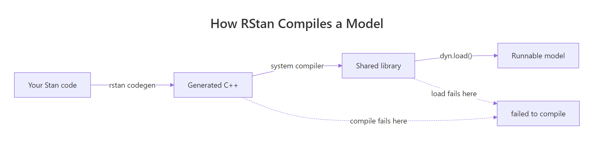
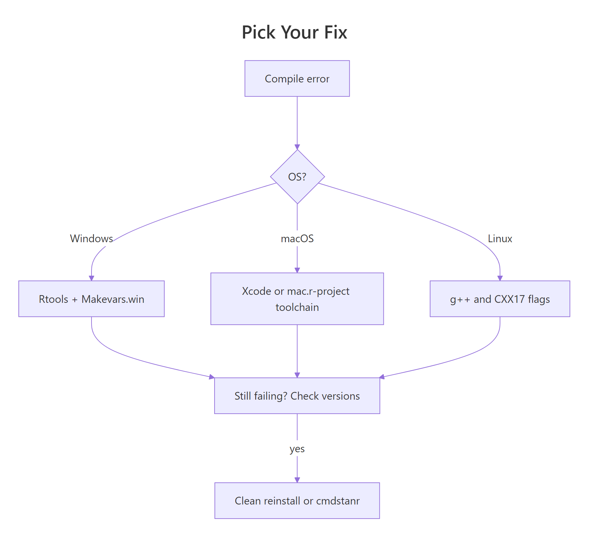

RStan 'failed to compile' Error — Every Known Fix in One Place
RStan's failed to compile error almost never comes from your Stan code — it comes from the C++ toolchain RStan uses to turn your model into a shared library. Fix the toolchain and the error disappears.
What does RStan's 'failed to compile' error actually mean?
Before chasing fixes, pin down what RStan is trying to do when it fails. RStan compiles your Stan code into C++, then hands that C++ to a system compiler — g++ on Linux/Mac, the Rtools toolchain on Windows — which turns it into a shared library R can load. The error is the compiler refusing that handoff. A 20-second diagnostic tells you which of the three links is broken.
Here's a self-contained diagnose_rstan_toolchain() helper you can drop into any R session. It inspects the five things that fail most often and returns a PASS/FAIL report:
Read the report top-to-bottom. Any FALSE points at the exact link in the chain that's broken: make_found = FALSE means no compiler on the PATH (install Rtools / Xcode); makevars_exists = FALSE with a modern RStan means no CXX17 flags; missing packages mean a clean reinstall is overdue. The sections below map each failure mode to its fix.
install.packages(), remove.packages(), and anything that touches Rtools or Xcode modify your local machine and must be run in your desktop R or RStudio.
Figure 1: How RStan turns your model into an executable — and where each compile failure happens.
Try it: Extend diagnose_rstan_toolchain() so it also reports the installed StanHeaders version (or "not installed"). Use packageVersion() inside a tryCatch().
Click to reveal solution
Explanation: packageVersion() errors if the package isn't installed, so wrapping it in tryCatch() lets you return a readable fallback instead of crashing the diagnostic.
How do you fix it on Windows (Rtools + Makevars)?
Windows is where most compile failures happen, and the cause is almost always the same: Rtools isn't installed, isn't on the PATH, or the Makevars.win file still has CXX14 flags from an old RStan release. Fixing this is a three-minute job if you do it in order.
Start by checking whether Rtools is even reachable. Sys.which("make") returns an empty string when it isn't, and pkgbuild::has_build_tools() is the robust alternative if you have pkgbuild installed:
An empty make_path means "no Rtools". Install it from cran.r-project.org/bin/windows/Rtools — pick the version matching your R (Rtools44 for R 4.4.x, Rtools45 for R 4.5.x) and take the default install options. Restart R fully after the install completes — a workspace clear is not enough, the PATH changes only reach R on a fresh process.
With Rtools present, the next failure mode is Makevars.win. Modern RStan (2.26+) requires C++17; a .R/Makevars.win file left over from RStan 2.21 will still have CXX14FLAGS lines and break the build. Here's a known-good template — the block is a plain character vector you can write to disk with writeLines():
In your local R session, write that to disk with writeLines(makevars_win, file.path(Sys.getenv("HOME"), ".R", "Makevars.win")) — the .R directory must already exist, so create it first with dir.create(..., showWarnings = FALSE). Restart R once more and try compiling.
.Rprofile with a BINPREF entry silently breaks R 4.x installs. If you installed RStan under R 3.6 years ago, your ~/.Rprofile may still set BINPREF to a path that no longer exists. The symptom is a compile error that ignores your new Makevars entirely. Open ~/.Rprofile, remove any BINPREF lines, and restart R.Try it: Modify makevars_win so the first line uses -O2 -mtune=native instead of the full optimization flag list. This is a safer default for older laptops that crash during heavy optimization.
Click to reveal solution
Explanation: -O2 is the GCC "reasonable optimization" level — it turns on most useful optimizations without the aggressive inlining that -O3 adds. For slow or memory-constrained machines, -O2 compiles faster and uses less RAM with negligible runtime cost.
How do you fix it on macOS (Xcode + clang)?
Mac failures come in two flavours: missing Xcode Command Line Tools (easy), and Apple's bundled clang rejecting OpenMP flags (annoying). Both are solvable, but the fix depends on whether you're on Intel or Apple Silicon.
First, detect your architecture so you write the right paths. R exposes it via R.version$arch:
aarch64 means Apple Silicon (M1/M2/M3/M4); x86_64 means Intel. The official R Project macOS tools page ships a custom clang + gfortran bundle that includes OpenMP support. Install it first, then point Makevars at the new compilers:
For Intel Macs, swap /opt/R/arm64/ for /opt/R/x86_64/ and arm64 for x86_64. That's the only difference.
xcode-select --install before anything else. It's a 2-minute fix that resolves roughly a third of Mac compile errors — the ones where Xcode Command Line Tools were never installed or got nuked by a macOS upgrade. Only install the R Project toolchain if the Xcode approach still fails.Try it: Write a function ex_mac_makevars(arch) that returns the right Makevars block for either "arm64" or "x86_64". Use sub() to swap the architecture in the paths.
Click to reveal solution
Explanation: paste0() builds each line by gluing the architecture into the path template. stopifnot() guards the input so a typo like "intel" fails loudly instead of producing garbage.
How do you fix RStan and StanHeaders version mismatches?
Once Rtools and Makevars are in order, the next most common failure is a version skew between rstan and StanHeaders. They ship from the same release cycle and rely on matching template code, so an rstan that's a release ahead will reference symbols the older StanHeaders never heard of — producing confusing C++ errors about missing templates and namespace members.
Start with a version check. Major.minor should match — the patch digit can differ:
A match_ok = FALSE or an empty version string means you need a clean reinstall. The official recipe is four steps: remove both packages, restart R completely, reinstall from the stan-dev r-universe (which always ships the coordinated release), and verify by compiling a trivial model.
If the trivial model compiles, every real model you already wrote will too. If it still fails, the toolchain is still wrong — loop back to the Rtools or Mac sections.
CXX14FLAGS in Makevars. Those flags will not only be ignored — on some compilers they trigger silent fallbacks that cause opaque errors. Replace every CXX14 line with a CXX17 equivalent.Try it: Extend the version check to also verify BH and RcppEigen are installed. These are upstream dependencies of StanHeaders and a missing one produces a compile error that looks identical to a version mismatch.
Click to reveal solution
Explanation: Wrapping packageVersion() in a helper avoids the same tryCatch() boilerplate for every package. A missing BH or RcppEigen is easy to miss because the compiler error blames Stan, not Boost.
When should you switch to cmdstanr instead?
After three toolchain fights in a row, most Stan users eventually ask whether there's a less fragile R interface. The answer is cmdstanr. It talks to CmdStan — Stan's command-line interface — so it skips the Rcpp/StanHeaders compile dance entirely and just needs a working C++ compiler on the PATH. The Stan Development Team now recommends it as the primary R interface for new projects.
Installation is a one-time ritual: install the R package, then call install_cmdstan() to download and build CmdStan itself (takes a few minutes, no further config):
A successful fit$summary() proves the entire toolchain is working and you can stop debugging RStan. Here's how the two interfaces compare day-to-day:
For new projects and when RStan keeps fighting you, cmdstanr is the better default. For legacy codebases with deep stanfit coupling, fix RStan once and ride it out.
cmdstanr::check_cmdstan_toolchain() is the single most useful diagnostic in the Stan ecosystem. Run it anytime you suspect a broken install — it prints exactly which part of the toolchain is missing and how to fix it, and it works identically on Windows, Mac, and Linux.Try it: Write a one-liner ex_toolchain_ok that runs check_cmdstan_toolchain() inside tryCatch() and returns TRUE on success, FALSE otherwise. This is the canonical gate for CI scripts that need Stan.
Click to reveal solution
Explanation: check_cmdstan_toolchain(quiet = TRUE) errors when the toolchain is broken, so a tryCatch() wrapper turns it into a clean boolean. Checking requireNamespace() first avoids a hard error if cmdstanr isn't installed.
Practice Exercises
Exercise 1: Build a fix_stan_toolchain() orchestrator
Write a function that detects the OS, prints the correct Makevars path for that OS, and returns a named list of action items based on which diagnostics pass. Combine diagnose_rstan_toolchain() from the first section with the OS-specific Makevars path logic.
Click to reveal solution
Explanation: The orchestrator reuses the diagnostic from the first section, translates each FALSE into a concrete next step, and special-cases the Makevars path per OS. That's the whole "which fix do I try first?" decision tree in ~15 lines.
Exercise 2: Compare RStan and cmdstanr on the same model
Write a function that compiles the same trivial Stan model with both interfaces, catches any errors, and returns a tibble-like comparison with success status and compile time in seconds. This mirrors a real-world decision: "which interface actually works on my machine right now?"
Click to reveal solution
Explanation: system.time() returns elapsed seconds and tryCatch() converts any compile failure into NA. The result is a two-row data frame you can read at a glance: if one row has success = TRUE and the other doesn't, you already know which interface to use.
Complete Example
Here's the canonical end-to-end fix for the most common scenario: Windows, R 4.4+, RStan has never compiled on this machine. You can run the diagnostic pieces here; run the install commands in your local R.
Step 1 — snapshot the current state with the diagnostic helper:
A missing Makevars is the issue. Build the template in memory so you see exactly what will be written:
Step 2 — in your local R session, commit the template to disk, remove the old RStan stack, restart R, and reinstall from the coordinated release channel:
Step 3 — verify with the trivial model. If this compiles, you're done:
A stanmodel class means the compile succeeded end-to-end. Your real models will now compile with the same toolchain — the only thing left is whatever inference work the model itself needs.
Summary

Figure 2: Decision flow for picking the right fix based on error symptom and operating system.
The decision tree above captures the whole "which fix do I try first?" process. The table below maps the symptom you see in the R console to the root cause and the fix that resolves it:
| Symptom | Likely cause | Fix |
|---|---|---|
make: command not found |
No Rtools / no Xcode CLT | Install Rtools44/45 or run xcode-select --install |
CXX14 not defined |
Old Makevars from pre-2.26 RStan | Replace with the CXX17 template |
| Template / namespace errors | Version mismatch between rstan and StanHeaders | Clean reinstall from stan-dev r-universe |
unsupported option '-fopenmp' |
Apple clang on macOS | Install the R Project macOS toolchain |
| Error persists after fix | Stale cache or missed R restart | Restart R, clear ~/.cache/stan, retry |
| Fragile across upgrades | Rcpp/StanHeaders fragility | Switch to cmdstanr |
Three mental models to take away: (1) the compile error lies about its source — always suspect the toolchain before the Stan code; (2) R restarts are load-bearing — skipping one turns a valid fix into a ghost bug; (3) cmdstanr sidesteps most of this class of problem entirely.
References
- Stan Development Team — RStan Getting Started Wiki. Link
- Stan Development Team — Configuring C++ Toolchain for Windows. Link
- Stan Development Team — Configuring C++ Toolchain for Mac. Link
- CRAN — Rtools for Windows (Rtools44 / Rtools45 downloads). Link
- Simon Urbanek — R for macOS Developers (toolchain downloads). Link
- Stan Development Team — cmdstanr: R interface to CmdStan. Link
- Stan Forums — Error when Configuring RStan C++ toolchain. Link
- stan-dev/rstan Issue #1129 — Cannot install rstan on R 4.5.0 with Rtools44. Link
Continue Learning
- 50 R Errors Decoded: Plain-English Explanations and Exact Fixes — The parent reference that lists all 50 common R error messages with short fixes.
- R Debugging Tools: browser(), debug(), trace() — Once your toolchain is fixed, these are the tools you reach for when the model compiles but behaves badly.
- Install R and RStudio (2026 Edition) — Get the base environment right before you layer RStan or cmdstanr on top.